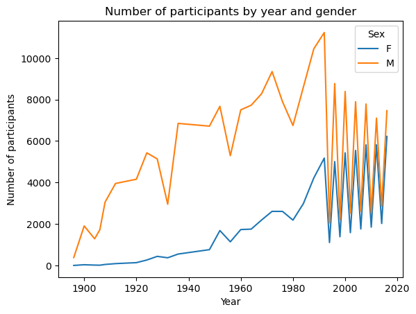

import requests
import matplotlib.pyplot as plt
import pandas as pd
import seaborn as sns
import numpy as np
import plotly.express as px
%matplotlib inline Blog
Name: Nancy Sui
Date: 8/1/2024
Class: UCLA DH 140
Olympic Evolution: Exploring Trends in National Dominance, Gender Representation, and Home Advantage
Photo Credit: NBCUniversal https://www.nbcuniversal.com/article/more-150-commentators-join-nbcuniversals-coverage-olympic-games-paris-2024
Introduction
The 2024 Paris Olympics, the most anticipated global event of this summer, has brought a renewed focus on the dynamics that shape the world of sports. This project examines the evolution of women’s representation in the Olympics, highlighting the progress made toward gender equality. Additionally, the concept of “home advantage” is analyzed to determine its impact on medal counts for host countries. Finally, this study analyzes the dominance of countries in the Olympics and the sports they excel in, providing insights into the factors contributing to success.
Dataset Description
| Dataset Name | Description | Link to Resources |
|---|---|---|
| 120 Years of Olympic History: Athletes and Results | This dataset contains detailed information about athletes and their results in the Olympics from 1896 to 2016. It includes variables such as ID, Name, Sex, Age, Height, Weight, Team, NOC, Games, Year, Season, City, Sport, Event, and Medal. | Kaggle: 120 Years of Olympic History |
| Country Wise GDP Data | This dataset provides information on the Gross Domestic Product (GDP) of various countries. It includes variables such as Country, Year, and GDP in USD. | Kaggle: Country GDP Data |
Research Questions
- How has the representation of women in the Olympics changed over the decades?
- What is the impact of home advantage on Olympic medal counts?
- Which countries have historically dominated which sports in Olympics?
Motivation
The 2024 Paris Olympics, capturing global attention this summer, provides a compelling backdrop for examining the intersection of sports and digital humanities. This project aims to explore the evolving representation of women in sports through digital analysis and assess the impact of home advantage on medal counts. By leveraging digital tools and computational techniques, this research not only highlights the dynamic nature of the Games but also demonstrates how digital humanities can enhance our understanding of socio-economic and cultural phenomena in global sports.
Methods
- Data Preprocessing
- Import Data
- Cleaning
- Merging
- Data Analysis
- Basic statistical analysis
- Data Visualization
- Insights
- Comparsion
Data Preprocessing
Import All Necessary Library
data.describe().T| count | mean | std | min | 25% | 50% | 75% | max | |
|---|---|---|---|---|---|---|---|---|
| ID | 271116.0 | 68248.954396 | 39022.286345 | 1.0 | 34643.0 | 68205.0 | 102097.25 | 135571.0 |
| Age | 261642.0 | 25.556898 | 6.393561 | 10.0 | 21.0 | 24.0 | 28.00 | 97.0 |
| Height | 210945.0 | 175.338970 | 10.518462 | 127.0 | 168.0 | 175.0 | 183.00 | 226.0 |
| Weight | 208241.0 | 70.702393 | 14.348020 | 25.0 | 60.0 | 70.0 | 79.00 | 214.0 |
| Year | 271116.0 | 1978.378480 | 29.877632 | 1896.0 | 1960.0 | 1988.0 | 2002.00 | 2016.0 |
data.isnull().sum()/data.shape[0]ID 0.000000
Name 0.000000
Sex 0.000000
Age 0.034944
Height 0.221938
Weight 0.231912
Team 0.000000
NOC 0.000000
Games 0.000000
Year 0.000000
Season 0.000000
City 0.000000
Sport 0.000000
Event 0.000000
Medal 0.853262
dtype: float64Medal is larger than 0.5, we will discuss it later.
noc_data= pd.read_csv("~/Desktop/noc_regions.csv", encoding='latin1')
noc_data.drop('notes', axis = 1 , inplace = True)
noc_data.rename(columns = {'region':'Country'}, inplace = True)
noc_data.head()| NOC | Country | |
|---|---|---|
| 0 | AFG | Afghanistan |
| 1 | AHO | Curacao |
| 2 | ALB | Albania |
| 3 | ALG | Algeria |
| 4 | AND | Andorra |
Data Cleaning
print(data.isnull().sum())ID 0
Name 0
Sex 0
Age 9474
Height 60171
Weight 62875
Team 0
NOC 0
Games 0
Year 0
Season 0
City 0
Sport 0
Event 0
Medal 231333
dtype: int64The Age, Height, and Weight columns contain a significant number of missing values. The Medal column also has missing values, which is expected as it is only absent for participants who did not win a medal.
# Now replace the missing values of Medal with 'NA'
data['Medal'].fillna('NA', inplace = True)
print(data.isnull().sum()) # check it again ID 0
Name 0
Sex 0
Age 9474
Height 60171
Weight 62875
Team 0
NOC 0
Games 0
Year 0
Season 0
City 0
Sport 0
Event 0
Medal 0
dtype: int64Merge Data
df=data.merge(noc_data,left_on='NOC', right_on='NOC',how='left')
df.head()| ID | Name | Sex | Age | Height | Weight | Team | NOC | Games | Year | Season | City | Sport | Event | Medal | Country | |
|---|---|---|---|---|---|---|---|---|---|---|---|---|---|---|---|---|
| 0 | 1 | A Dijiang | M | 24.0 | 180.0 | 80.0 | China | CHN | 1992 Summer | 1992 | Summer | Barcelona | Basketball | Basketball Men's Basketball | NA | China |
| 1 | 2 | A Lamusi | M | 23.0 | 170.0 | 60.0 | China | CHN | 2012 Summer | 2012 | Summer | London | Judo | Judo Men's Extra-Lightweight | NA | China |
| 2 | 3 | Gunnar Nielsen Aaby | M | 24.0 | NaN | NaN | Denmark | DEN | 1920 Summer | 1920 | Summer | Antwerpen | Football | Football Men's Football | NA | Denmark |
| 3 | 4 | Edgar Lindenau Aabye | M | 34.0 | NaN | NaN | Denmark/Sweden | DEN | 1900 Summer | 1900 | Summer | Paris | Tug-Of-War | Tug-Of-War Men's Tug-Of-War | Gold | Denmark |
| 4 | 5 | Christine Jacoba Aaftink | F | 21.0 | 185.0 | 82.0 | Netherlands | NED | 1988 Winter | 1988 | Winter | Calgary | Speed Skating | Speed Skating Women's 500 metres | NA | Netherlands |
Methods
Create a bar plot using Seaborn to visualize how many women won medals each year in the Summer Olympics
# female participants in the Summer Olympics
women_olympics = df[(df['Sex'] == 'F') & (df['Season'] == 'Summer') & (df['Medal'].notnull())]
plt.figure(figsize=(20, 10))
sns.countplot(x='Year', data=women_olympics, palette='coolwarm')
# Add title
plt.title('Number of Women Winning Medals per Edition of the Summer Olympics')
plt.xlabel('Year')
plt.ylabel('Number of Medals')
plt.show()Show trends of numbers of Male and Female Participants by each year
year_sex_medal = df.groupby(['Year', 'Sex']).size().reset_index(name='Medal')
year_sex_medal_pivot=year_sex_medal.pivot(index='Year', columns='Sex', values='Medal').fillna(0)
plt.figure(figsize=(20, 10))
fig=plt.gcf()
year_sex_medal_pivot.plot(kind='line')
plt.xlabel('Year')
plt.ylabel('Number of participants')
plt.title('Number of participants by year and gender')
plt.show()<Figure size 2000x1000 with 0 Axes>
Observations:
Initial Gap: The graph shows a significant gap between the number of male and female participants in the earlier decades of the Olympics. Historically, the participation of women in the Olympics was minimal.
Recent Trends: In recent decades, the gap between the number of male and female participants has been narrowing. This trend highlights the progress towards gender equality in sports, with more events being made available to female athletes and increased efforts to promote women’s participation in the Olympics.
Home Advantage
# Correct city names in the dataset
df['City'].replace(['Athina', 'Moskva'], ['Athens', 'Moscow'], inplace=True)
# Mapping city to its host country
city_to_country = {
'Tokyo': 'Japan', 'Mexico City': 'Mexico', 'Munich': 'Germany', 'Montreal': 'Canada',
'Moscow': 'Russia', 'Los Angeles': 'USA', 'Seoul': 'South Korea', 'Barcelona': 'Spain',
'Atlanta': 'USA', 'Sydney': 'Australia', 'Athens': 'Greece', 'Beijing': 'China',
'London': 'UK', 'Rio de Janeiro': 'Brazil'
}
df['Country_Host'] = df['City'].map(city_to_country)
olympics_complete_subset = df[['Year', 'Country_Host', 'Team', 'Medal']].drop_duplicates()
# find year, host nation and team name
year_host_team = olympics_complete_subset[['Year', 'Country_Host', 'Team']].drop_duplicates()
# check if rows where host country is the same as team
row_mask_4 = (year_host_team['Country_Host'] == year_host_team['Team'])
# Add years to show one previous and one later year
year_host_team['Prev_Year'] = year_host_team['Year'] - 4
year_host_team['Next_Year'] = year_host_team['Year'] + 4
# only if where host nation and team were the same
year_host_team = year_host_team[row_mask_4]#
medal_tally = df.groupby(['Year', 'Team'])['Medal'].count().reset_index().rename(columns={'Medal': 'Medal_Won_Corrected'})
year_host_team_medal = year_host_team.merge(medal_tally, left_on=['Year', 'Team'], right_on=['Year', 'Team'], how='left')
year_host_team_medal.rename(columns={'Medal_Won_Corrected': 'Medal_Won_Host_Year'}, inplace=True)
# Calculate medals won by team in previous year
year_host_team_medal = year_host_team_medal.merge(medal_tally, left_on=['Prev_Year', 'Team'], right_on=['Year', 'Team'], how='left')
year_host_team_medal.drop('Year_y', axis=1, inplace=True)
year_host_team_medal.rename(columns={'Medal_Won_Corrected': 'Medal_Won_Prev_Year', 'Year_x': 'Year'}, inplace=True)
# Calculate the medals won by the team the year after they hosted
year_host_team_medal = year_host_team_medal.merge(medal_tally, left_on=['Next_Year', 'Team'], right_on=['Year', 'Team'], how='left')
year_host_team_medal.drop('Year_y', axis=1, inplace=True)
year_host_team_medal.rename(columns={'Medal_Won_Corrected': 'Medal_Won_Next_Year', 'Year_x': 'Year'}, inplace=True)
year_host_team_medal.drop(['Prev_Year', 'Next_Year'], axis=1, inplace=True)
year_host_team_medal.sort_values('Year', ascending=True, inplace=True)
year_host_team_medal.reset_index(inplace=True, drop=True)
#re-ordering
year_host_team_medal = year_host_team_medal[['Year', 'Country_Host', 'Team', 'Medal_Won_Prev_Year', 'Medal_Won_Host_Year', 'Medal_Won_Next_Year']]
year_host_team_medal.dropna(subset=['Medal_Won_Host_Year'], inplace=True)
# Display the result
year_host_team_medal| Year | Country_Host | Team | Medal_Won_Prev_Year | Medal_Won_Host_Year | Medal_Won_Next_Year | |
|---|---|---|---|---|---|---|
| 0 | 1896 | Greece | Greece | NaN | 140 | 4.0 |
| 1 | 1906 | Greece | Greece | NaN | 318 | NaN |
| 2 | 1964 | Japan | Japan | 346.0 | 531 | 384.0 |
| 3 | 1968 | Mexico | Mexico | 118.0 | 446 | 281.0 |
| 4 | 1976 | Canada | Canada | 421.0 | 620 | 82.0 |
| 5 | 1988 | South Korea | South Korea | 278.0 | 603 | 363.0 |
| 6 | 1992 | Spain | Spain | 346.0 | 582 | 380.0 |
| 7 | 2000 | Australia | Australia | 542.0 | 762 | 585.0 |
| 8 | 2004 | Greece | Greece | 175.0 | 495 | 172.0 |
| 9 | 2008 | China | China | 490.0 | 708 | 463.0 |
| 10 | 2016 | Brazil | Brazil | 294.0 | 571 | NaN |
# Create a bar plot to visualize the medals won before, during, and after hosting the Olympics
plt.figure(figsize=(14, 8))
for index, row in year_host_team_medal.iterrows():
plt.plot([row['Year']-4, row['Year'], row['Year']+4],
[row['Medal_Won_Prev_Year'], row['Medal_Won_Host_Year'], row['Medal_Won_Next_Year']],
marker='o', label=row['Country_Host'])
plt.xlabel('Year')
plt.ylabel('Number of Medals')
plt.title('Medals Won by Host Countries: Before, During, and After Hosting Olympics')
plt.legend(loc='upper left', bbox_to_anchor=(1, 1))
plt.grid(True)
plt.show()Analyze the dominance of countries in the Olympics and the sports they excel in
# Calculate the total number of medals won by each country
total_medals = df[df['Medal'] != 'NA'].groupby('Country')['Medal'].count().reset_index()
total_medals = total_medals.sort_values(by='Medal', ascending=False).reset_index(drop=True)
# Display the top 10 countries
top_countries = total_medals.head(10)
top_countries| Country | Medal | |
|---|---|---|
| 0 | USA | 5637 |
| 1 | Russia | 3947 |
| 2 | Germany | 3756 |
| 3 | UK | 2068 |
| 4 | France | 1777 |
| 5 | Italy | 1637 |
| 6 | Sweden | 1536 |
| 7 | Canada | 1352 |
| 8 | Australia | 1349 |
| 9 | Hungary | 1135 |
# include only the first country
top_countries_list = top_countries['Country'].tolist()
df_top_countries = df[df['Country'].isin(top_countries_list) & (df['Medal'] != 'NA')]
# Calculate the total number of medals for each country
country_sport_medals = df_top_countries.groupby(['Country', 'Sport'])['Medal'].count().reset_index()
# sorting medals in descending order and picking the top entry for each country
top_sport_per_country = country_sport_medals.sort_values('Medal', ascending=False).groupby('Country').head(1).reset_index(drop=True)
# Sort the top sports for each country by the number of medals in descending order to rank them
top_sport_per_country = top_sport_per_country.sort_values('Medal', ascending=False).reset_index(drop=True)
#show result
top_sport_per_country.head(10)| Country | Sport | Medal | |
|---|---|---|---|
| 0 | USA | Athletics | 1080 |
| 1 | Germany | Rowing | 471 |
| 2 | Australia | Swimming | 412 |
| 3 | Russia | Gymnastics | 399 |
| 4 | Italy | Fencing | 359 |
| 5 | Canada | Ice Hockey | 348 |
| 6 | UK | Athletics | 338 |
| 7 | France | Fencing | 310 |
| 8 | Hungary | Fencing | 236 |
| 9 | Sweden | Ice Hockey | 217 |
# Plot the total number of medals won by the top countries
plt.figure(figsize=(12, 8))
sns.barplot(data=top_countries, x='Medal', y='Country', palette='viridis')
plt.title('Top 10 Countries by Total Number of Medals')
plt.xlabel('Total Medals')
plt.ylabel('Country')
plt.show()
# Plot the top sport for each of the top countries
plt.figure(figsize=(14, 8))
sns.barplot(data=top_sport_per_country, x='Medal', y='Country', hue='Sport', dodge=False, palette='viridis')
plt.title('Top Sport for Each of the Top 10 Countries')
plt.xlabel('Total Medals in Sport')
plt.ylabel('Country')
plt.legend(title='Sport', bbox_to_anchor=(1.05, 1), loc='upper left')
plt.show()Results:
Key Findings
Gender Representation: The analysis revealed a substantial gap between male and female participants in the early years of the Olympics. However, this gap has narrowed significantly in recent decades. Key milestones, such as the introduction of Title IX in the United States and the establishment of the Women’s Sports Foundation, correlate with notable increases in female participation.
National Dominance: The early 20th century was dominated by the United States and Great Britain, as shown in the medal counts. The mid-20th century saw the rise of the Soviet Union and Eastern Bloc countries, which invested heavily in sports programs. In recent decades, China has emerged as a dominant force, particularly since the 2008 Beijing Olympics, reflecting its substantial investment in sports infrastructure and athlete development. The analysis of the top sports for each country revealed strategic focuses, with the United States excelling in track and field, swimming, and gymnastics, while China has shown strength in diving, gymnastics, and weightlifting.
Home Country Advantage: Hosting the Olympics has a noticeable impact on a country’s medal count. Host countries typically see a spike in medals won during the year they host the Games. The data for countries like the United States (1984), China (2008), and Great Britain (2012) illustrate this trend, highlighting the benefits of competing at home country.